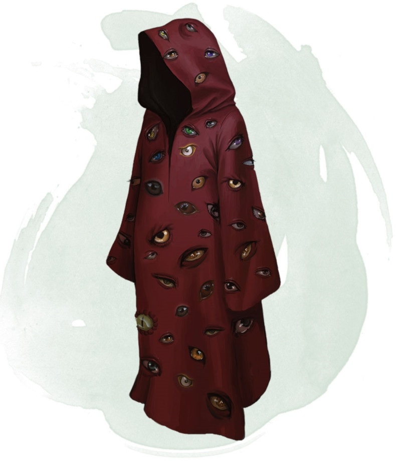

Robe of Eyes
Wondrous item, rare (requires attunement)
This robe is adorned with eyelike patterns. While you wear the robe, you gain the following benefits:
• The robe lets you see in all directions, and you have advantage on Wisdom (Perception) checks that rely on sight.
• You have darkvision out to a range of 120 feet.
• You can see invisible creatures and objects, as well as see into the Ethereal Plane, out to a range of 120 feet.
The eyes on the robe can't be closed or averted. Although you can close or avert your own eyes, you are never considered to be doing so while wearing this robe.
A light spell cast on the robe or a daylight spell cast within 5 feet of the robe causes you to be blinded for 1 minute. At the end of each of your turns, you can make a Constitution saving throw (DC 11 for light or DC 15 for daylight), ending the blindness on a success.
• The robe lets you see in all directions, and you have advantage on Wisdom (Perception) checks that rely on sight.
• You have darkvision out to a range of 120 feet.
• You can see invisible creatures and objects, as well as see into the Ethereal Plane, out to a range of 120 feet.
The eyes on the robe can't be closed or averted. Although you can close or avert your own eyes, you are never considered to be doing so while wearing this robe.
A light spell cast on the robe or a daylight spell cast within 5 feet of the robe causes you to be blinded for 1 minute. At the end of each of your turns, you can make a Constitution saving throw (DC 11 for light or DC 15 for daylight), ending the blindness on a success.
Dungeon Master´s Guide (SRD)
